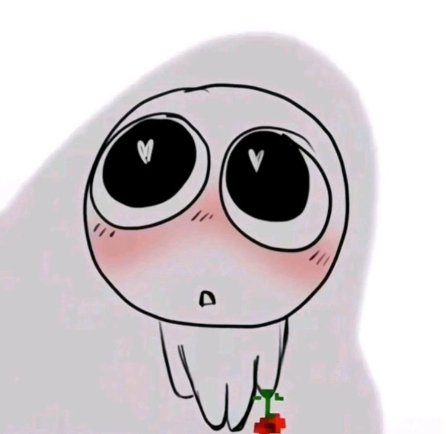

Uma breve jornada sobre o belo...
"A alma, ao contemplar o brilho nos olhos, recorda-se da luz que outrora conheceu. É um esplendor que emana da verdade e conduz o olhar para o divino."
Platão"As formas principais da beleza são a ordem, a simetria e a determinação. É a harmonia absoluta de cada parte que compõe a integridade de um todo perfeito."
Aristóteles"Pergunta à luz que emana do ser... e ela te responderá: 'Vê, eu sou o reflexo de algo maior'. É um hino vivo de louvor que ilumina tudo ao redor."
Santo Agostinho"É um prazer puro que suspende a razão e encanta a alma por sua simples existência. Agrada universalmente, sem o auxílio de um conceito ou de uma lógica."
Immanuel Kant"A beleza não é senão uma promessa de felicidade. Ela é o sinal visível de que a alegria é possível e de que o mundo alcançou sua forma ideal."
Stendhal"Eu te louvo porque me fizeste de modo especial e admirável. Tuas obras são maravilhosas, digo isso com convicção."
Salmos 139:14Muitos tentaram definir o que é o belo, mas nenhum texto chegou perto do que meus olhos veem agora.
A obra de Deus é perfeita em cada detalhe, mas em você, Ele se superou! ❤️

Não ligue pra mim, sou só o músico. 🦎🎶